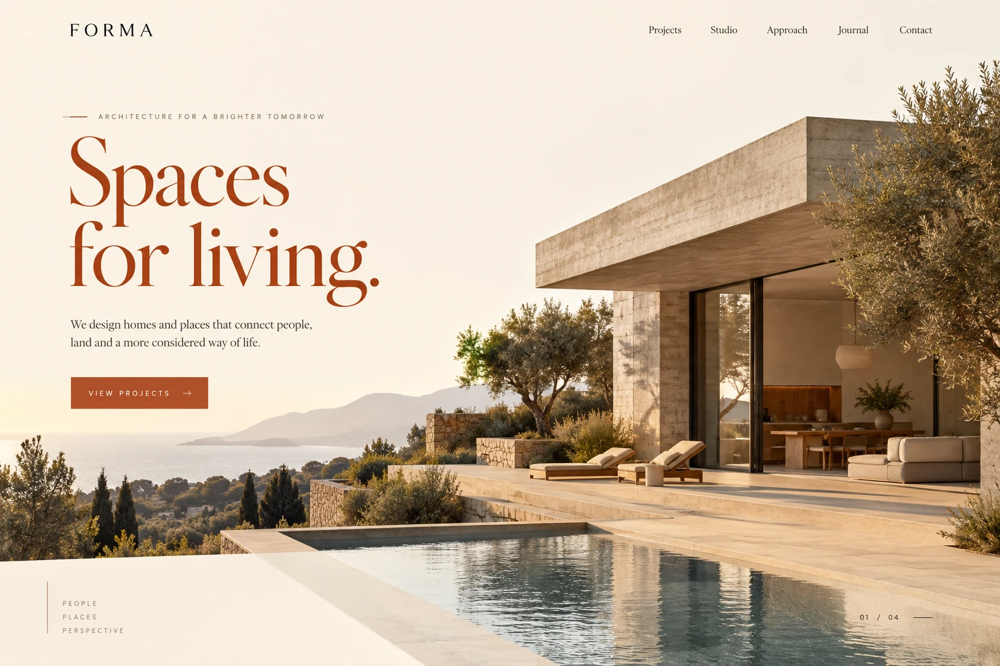
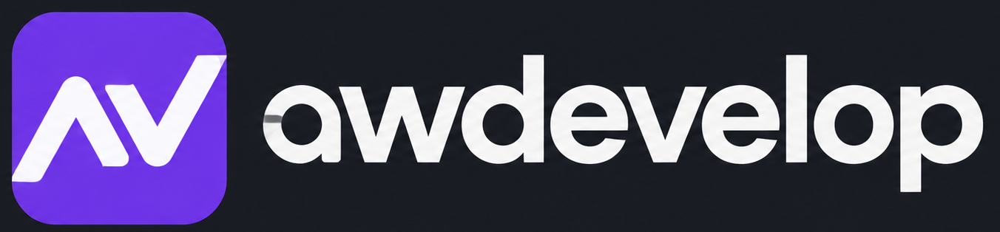

SITE INSTITUCIONAL
Forma Studio
Portfólio e apresentação de serviços para um estúdio de arquitetura.
PROJETO CONCEITUAL
Sites, lojas e sistemas com escopo, etapas e investimento definidos antes de começar.
| Pedido | Cliente | Status |
|---|---|---|
| #1048 | Marina S. | Confirmado |
| #1047 | Lucas M. | Em produção |
| #1046 | Beatriz A. | Concluído |
Exemplos visuais do que podemos desenvolver.
Escolha um projeto para conhecer a proposta.
Conceitos com marcas fictícias, criados para demonstrar possibilidades de design. Não são projetos entregues a clientes.
Cada etapa tem uma entrega.
Cada entrega passa pela sua revisão.
Entendemos como seu negócio funciona e o que você precisa. A proposta define páginas, funcionalidades, prazo e investimento.
Apresentamos a direção visual, alinhamos os ajustes e desenvolvemos o projeto. Você participa das revisões durante a construção.
Conferimos o que foi combinado, publicamos e orientamos o uso. Suporte, manutenção e novas funcionalidades podem fazer parte da proposta.
A solução depende da sua operação.
Estas são algumas possibilidades.
Apresentação da empresa, serviços, localização e contato. Uma página de campanha ou um site completo.
Sua empresa fácil de encontrar.Produtos, categorias e jornada de compra. Planejamento das integrações com pedidos e pagamentos.
Um caminho mais claro para comprar.Pedidos, clientes e informações organizados. Um sistema que acompanha os processos da sua equipe.
Menos controle espalhado em planilhas.Agendamentos, formulários e acompanhamento das solicitações em um fluxo definido para seu negócio.
Mais organização do primeiro contato à entrega.Troca de dados entre sistemas, serviços e APIs. A integração é avaliada conforme as ferramentas utilizadas.
Informação sem precisar copiar de um lugar para outro.Notificações, atualizações e tarefas repetitivas organizadas em fluxos, com regras alinhadas antes de implementar.
Tempo para cuidar do que exige atenção.Um site abre novas portas. Um sistema conecta sua operação. Construímos os dois para acompanhar o próximo passo da sua empresa.
Vamos conectar sua ideiaVocê não precisa chegar com todas as telas prontas. Conte como trabalha hoje e onde está a dificuldade. O primeiro passo é organizar as prioridades.
Começar pelo meu projetoEscopo e prazo definidos na proposta.Desenvolvimento web · awdevelop
Trabalho com Angular, TypeScript e Node.js. Aqui na awdevelop, o projeto começa entendendo o que a sua empresa precisa fazer na prática: apresentar um serviço, receber um contato ou organizar uma operação.
Conte o que você tem em menteDepende do número de páginas, das funcionalidades e das integrações. Depois de entender sua ideia, enviamos uma proposta com o que está incluído e o investimento.
O prazo é definido junto com o escopo. Conteúdo, aprovações e complexidade influenciam a entrega. As etapas ficam claras antes do início.
Sim. Podemos avaliar o visual, a experiência no celular e a estrutura para propor uma melhoria ou um novo desenvolvimento.
Esses itens são definidos na proposta. Explicamos as opções e os custos recorrentes para você decidir com clareza.
Algumas informações ajudam a entender sua necessidade e preparar a próxima conversa.